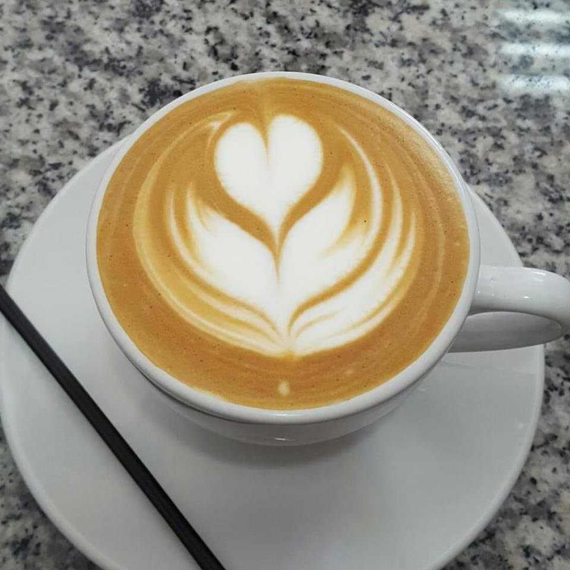

Café
Para Café Café, la calidad es un compromiso.
Es por eso que llevamos a cabo estrictas medidas
tendientes a garantizar el aseguramiento de la
calidad en cada etapa de procesamiento.
Nuestro interés constante en ofrecer el café que los
consumidores se merecen nos lleva a exigirnos a nosotros
mismos la adopción de altos controles de calidad aceptados
y respetados por los mejores catadores del mundo.

Calidad.
Cada lote que comercializa Café de Eleta proviene de
nuestra plantación de cafetos Arábica, y es el resultado
de un largo y cuidadoso proceso de selección.
En nuestro proceso mantenemos en reposo los granos de
café en silos de madero o sacos de yute o henequén entre
60 y 90 días, bajo estrictos controles de temperatura,
humedad y condiciones apropiadas de luz. Así, el café
acentúa sus características organolépticas y obtiene
ese color verde turquesa homogéneo propio del mejor
café de América Central.
Nuestras Variedades de Café:
Catuaí Bourbón Geisha Typica Caturra